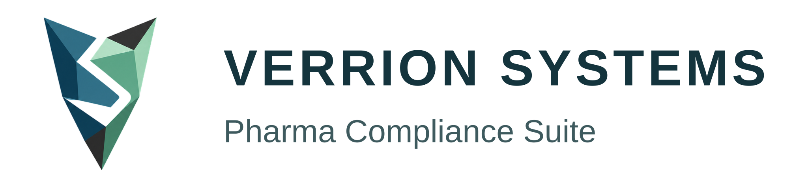

Evidence gets detached from conclusions.
Attachments pile up while assumptions, missing checks and unresolved impact questions disappear into narrative text.

Request pilotFor QA Leaders, QPs, Investigators and SOP Owners
Verrion Systems builds controlled software for GMP quality teams evaluating AI support in deviation and SOP workflows. The suite helps teams assemble evidence, compare SOP expectations, surface reasoning gaps and prepare review-ready outputs while keeping sanitisation, traceability and human approval in the record.
Why Pharma Leaders should care
Attachments pile up while assumptions, missing checks and unresolved impact questions disappear into narrative text.
Procedural requirements should shape the investigation, not be searched manually after the RCA is already drafted.
Generic assistants can create polished wording without showing sanitisation, prompt context, model version or reviewer decision state.
Controlled workflow
Capture facts, product or batch scope, owner, due date, severity and immediate actions before analysis begins.
Bring procedure clauses, evidence packs and open questions into the same workspace so expectations remain visible.
Sanitise context, record prompt and model versions, keep suggestions editable and keep the quality decision with authorised reviewers.
Flag AI-assisted text, preserve accept/edit/reject decisions and export a review pack with evidence links and audit history.
AI control record
When AI supports regulated quality work, reviewers need evidence they can inspect: what context was used, how identifiers were protected, which suggestion was made, and who accepted, edited or rejected it.
Suite modules
A controlled workspace for event facts, evidence packs, SOP expectations, impact questions, RCA/CAPA reasoning, reviewer comments and exportable investigation output.
A procedure intelligence layer for interrogating SOP content, extracting clause-linked expectations and comparing them with live investigation context.
Private pilot
The right first conversation is not a vague demo or a generic AI promise. It is a controlled pilot using synthetic or customer-approved scenarios, a small QA user group and clear criteria for workflow fit, report quality, data handling and validation-readiness review.
Next step
Book a private walkthrough of Verrion Systems Deviation Investigator, SOP Intelligence and the AI governance record behind each suggestion.